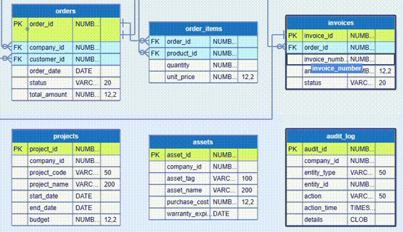
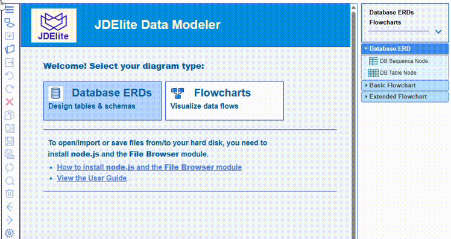

A SQL Sequence is a user-defined database object that automatically generates a sequential list of unique numeric values according to a defined interval. It is used in the supported SQL Server, Oracle, <PostgreSQL, DB2 and MariaDB.
Unlike IDENTITY columns or AUTO_INCREMENT properties, sequences are completely independent of any single table and can be shared across multiple tables. However, a sequence must be defined first, then it can be referenced as a column's DEFAULT value.
Here is one example for SQL Server:
CREATE SEQUENCE dbo.UserSequence START WITH 10 INCREMENT BY 1 CACHE 50;
CREATE TABLE users (
user_id INT NOT NULL
CONSTRAINT DF_users_user_id DEFAULT NEXT VALUE FOR dbo.UserSequence,
...
);
A corresponding usage in Oracle SQL script:
CREATE SEQUENCE seq_invoice START WITH 50000 INCREMENT BY 1 CACHE 50;
...
CREATE TABLE invoices (
invoice_id NUMBER GENERATED BY DEFAULT AS IDENTITY,
order_id NUMBER,
invoice_number NUMBER DEFAULT seq_invoice.NEXTVAL,
...
);
And here is the usage of seq_invoice sequence in the graphical ERD:

Here is an example how to create a database sequence node in JDElite:

NOTE: The order in the list of sequence options in the drop-down corresponds to the documentation of the database you have selected. You can specify the sequence options one after another in any order, JDElite will rearrange them in the correct order for the particular database.